<h1 class="highlight">labtech</h1> <div style="width: 260px; height: 260px; margin: 20px auto; background: white; border-radius: 50%; display: flex; align-items: center; justify-content: center;"> </div> <h2 style="font-size: 1.3em;"><span class="highlight">Concurrency</span> and <span class="highlight">caching</span> in Python for <span class="highlight">busy scientists</span></h2> ## Ben Denham - Software Engineer & Data Scientist <!-- .element style="font-size: 0.8em;" --> <aside class="notes"> * Hi everyone, I'm Ben * I'm going to share with you about labtech * A tool I've developed to scratch my own itch for managing lots of computational experiments * and I think you'll find it useful as well! </aside>
## What is <span class="highlight">labtech</span> ? <div class="fragment"> A <span class="highlight fragment">friendly</span> Python library for <span class="highlight fragment">efficiently</span> running and managing computational <span class="highlight fragment">experiments</span> </div> <aside class="notes"> * So what is labtech? * At a high level: *read verbatim* * Who - it's friendly - for scientists and other Python users who aren't primarily software engineers * Why - work more efficiently * What - computational experiments </aside>
### What counts as an <span class="highlight">*Experiment*</span> ? <ul> <li class="fragment"> <strong>Typically:</strong> <ul> <li>Running an expensive simulation</li> <li>Training a machine learning model</li> </ul> </li> <li class="fragment"> <strong>Technically:</strong> <ul> <li> Any <span class="highlight">task</span> run with <span class="highlight">many configurations</span>, <br>often made up of <span class="highlight">multiple steps</span> </li> <li class="fragment"> E.g. A web-scraper run on many webpages </li> </ul> </li> </ul> <aside class="notes"> * Some typical examples would be... (from slide) * But technically, it could be any task that... (from slide) * For example, even... (webscraping from slide) </aside>
### The Essence of an Experiment: <span class="highlight">Interactivity</span> * Closely monitoring execution * Adding/modifying experiments based on results * You need to <span class="highlight">iterate as fast as possible!</span> <aside class="notes"> * But the essence of experiments that labtech helps most with is summed up with one word: Interactivity * You don't know whether the ideas you're trying will work * ...so you keep a close eye while they're running * You're going to change direction based on the results * ..modifying experiment configurations or coming up with new ideas * and you want to move fast * ...reducing the time between asking a question and getting an answer </aside>
<h3>Experiment Iterations</h3> <table class="horizontal-bar-chart"> <tr> <th></th> <th> <div class="stacked-bar"> <div class="fragment stacked-bar-header" data-fragment-index="1" style="width: 20%; transition-duration: 0.25s;"> <br>0 – 5 mins </div> <div class="fragment stacked-bar-header" data-fragment-index="2" style="width: 35%; transition-duration: 0.4375s;"> <br>5 mins – 1 hour </div> <div class="fragment stacked-bar-header" data-fragment-index="3" style="width: 45%; transition-duration: 0.5625s;"> <br>1 hour – 1+ days </div> </div> </th> </tr> <tr class="no-row-border"> <td> Without labtech </td> <td> <div class="stacked-bar"> <div class="stacked-bar-part" style="width: 20%;"> <div class="stacked-bar-inner fragment width-fragment" data-fragment-index="1" style="background: #00C939; transition-duration: 0.25s;"></div> </div> <div class="stacked-bar-part" style="width: 35%;"> <div class="stacked-bar-inner fragment width-fragment" data-fragment-index="2" style="background: #EBB800; transition-duration: 0.4375s;"></div> </div> <div class="stacked-bar-part" style="width: 45%;"> <div class="stacked-bar-inner fragment width-fragment" data-fragment-index="3" style="background: #F5000C; transition-duration: 0.5625s;"></div> </div> </div> </td> </tr> <tr class="fragment top-row-border" data-fragment-index="4"> <td> </td> <td> <div class="stacked-bar fragment width-fragment" data-fragment-index="5" style="transition-duration: 1.25s;"> <div class="stacked-bar-part" style="width: 70%;"> <div class="stacked-bar-inner" style="background: #00C939;"></div> </div> <div class="stacked-bar-part" style="width: 20%;"> <div class="stacked-bar-inner" style="background: #EBB800;"></div> </div> <div class="stacked-bar-part" style="width: 10%;"> <div class="stacked-bar-inner" style="background: #F5000C;"></div> </div> </div> </td> </tr> </table> <aside class="notes"> * Because while some of your experiment ideas will only take a few minutes to test * ...others might take more time - long enough you risk losing your train of thought * ...up to an hour particularly annoys me, because it isn't even long enough to be worth switching context to another task * ...but then there are experiments where you might just have to wait up to a day or more to see results * Labtech's job is to make it faster to test more of your ideas by both * ...reducing unnecessary computation * ...and helping you better manage your experiments * Aside: E.g. know what you've already run, know what's taking too long, extend experiment code * With labtech, you're able to stay in a flow state longer and be more productive </aside>
## Overview 1. Applying labtech to speed-up ML experiments 2. More labtech features for faster experiments 3. How labtech compares to similar tools <aside class="notes"> * So over the rest of this talk, we're going to look at... </aside>
#### Example: Machine Learning Experiments <div class="experiment-steps"> <div class="experiment-step fragment" data-fragment-index="1">Load</div> <div class="experiment-step fragment" data-fragment-index="2">Prepare</div> <div class="experiment-step fragment" data-fragment-index="3">Train</div> <div class="experiment-step fragment" data-fragment-index="4">Evaluate</div> </div> <div style="font-size: 0.72em;"> <pre><code data-trim data-noescape class="python language-python" data-fragment-index="1" data-line-numbers="|2-4|6-9|1,11-14|16-17|19"> def run_experiment(leaf_max: int): # Load train and test datasets txt_train = fetch_20newsgroups(subset='train') txt_test = fetch_20newsgroups(subset='test') # Prepare "bag-of-words" (BoW) representation of text vectorizer = CountVectorizer(binary=True) bow_train = vectorizer.fit_transform(txt_train.data) bow_test = vectorizer.transform(txt_test.data) # Train classifier to predict topic labels from BoW classifier = RandomForestClassifier(max_leaf_nodes=leaf_max, random_state=1) classifier.fit(bow_train, txt_train.target) target_pred = classifier.predict(bow_test) # Evaluate classifier accuracy return accuracy_score(txt_test.target, target_pred) run_experiment(leaf_max=50) </code></pre> </div> <div class="tasks fragment" style="margin: 10px 0;" data-fragment-index="5"> <div class="task-line"> <div class="task"> <div class="task-progress fragment" data-fragment-index="11" data-animation-name="task-progress-1"></div> <div class="task-label">run_experiment(leaf_max=50)</div> </div> </div> </div> <aside class="notes"> * So let's look at how labtech can speed up some machine learning experiments * Here is our experiment code without labtech * The details aren't important * ... but at a high-level, during each experiment, we: * load a dataset of text from online forum * prepare a numerical bag-of-words representation of the text * then train a classifier to assign a topic label to a forum message * the experiment also takes a `leaf_max` parameter that affects how the classifier is trained * and finally evaluate the accuracy of the classifier * The key point to understand: each experiment takes a while to run </aside>
### Slow-Down #1: Parameter Permutations ```python for leaf_max in [10, 50, 90]: run_experiment(leaf_max=leaf_max) ``` <div class="tasks tasks-2"> <div class="task-line"> <div class="task"> <div class="task-progress fragment" data-fragment-index="1" data-animation-name="task-progress-2a"></div> <div class="task-label">run_experiment(leaf_max=10)</div> </div> </div> <div class="task-line"> <div class="task"> <div class="task-progress fragment" data-fragment-index="1" data-animation-name="task-progress-2b"></div> <div class="task-label">run_experiment(leaf_max=50)</div> </div> </div> <div class="task-line"> <div class="task"> <div class="task-progress fragment" data-fragment-index="1" data-animation-name="task-progress-2c"></div> <div class="task-label">run_experiment(leaf_max=90)</div> </div> </div> </div> <aside class="notes"> * While running experiment permutations with varied parameters, we'll very quickly notice our first speed impediment * Running lots of experiments one-after-another is going to take a while! </aside>
### Speed-Up #1: Concurrency! <div class="tasks"> <div class="task-line"> <div class="task"> <div class="task-progress fragment" data-fragment-index="1" data-animation-name="task-progress-3"></div> <div class="task-label">Experiment(leaf_max=10)</div> </div> </div> <div class="task-line"> <div class="task"> <div class="task-progress fragment" data-fragment-index="1" data-animation-name="task-progress-3"></div> <div class="task-label">Experiment(leaf_max=50)</div> </div> </div> <div class="task-line"> <div class="task"> <div class="task-progress fragment" data-fragment-index="1" data-animation-name="task-progress-3"></div> <div class="task-label">Experiment(leaf_max=90)</div> </div> </div> </div> <aside class="notes"> * Labtech makes it easy to run as many experiments at the same time as our computer can handle </aside>
### Parallel tasks with labtech <div style="font-size: 0.9em;"> ```python [|3-8|10-13|15-16] import labtech as lt @lt.task class Experiment: leaf_max: int def run(self): return run_experiment(leaf_max=self.leaf_max) experiments = [ Experiment(leaf_max=leaf_max) for leaf_max in [10, 50, 90] ] lab = lt.Lab(storage=None, max_workers=3) results = lab.run_tasks(experiments) ``` </div> <aside class="notes"> * And here's what that looks like * We define a Task class for our experiment that just needs to run our original experiment code * Similar to a dataclass, we declare any parameters of the experiment as attributes * Then we create an instance of our Experiment Task for each permutation that we want to run * Then we instruct labtech to run the experiment tasks * Setting `max_workers` tells labtech to run up to 3 tasks at a time * ...perfect for a typical 4-core CPU </aside>
<video data-autoplay loop src="images/labtech_concurrency_jupyter.webm"></video> <video class="fragment" data-autoplay loop src="images/labtech_concurrency_console.webm"></video> <aside class="notes"> * When we run these experiments: * labtech shows a progress bar (courtesy of the tqdm library) * And shows each running task along with the CPU and RAM it's using * Tasks can also log messages to be displayed * This works in Jupyter notebooks, as well as at the command line </aside>
### Slow-Down #2: Redundancy in Tasks <div class="tasks tasks-3" style="font-size: 0.9em;"> <div class="task-line"> <div class="task"> <div class="task-progress fragment" data-fragment-index="1" data-animation-name="task-progress-3"></div> <div class="task-label">Load → Prepare → Train (leaf_max=10) → Evaluate</div> </div> </div> <div class="task-line"> <div class="task"> <div class="task-progress fragment" data-fragment-index="1" data-animation-name="task-progress-3"></div> <div class="task-label">Load → Prepare → Train (leaf_max=50) → Evaluate</div> </div> </div> <div class="task-line"> <div class="task"> <div class="task-progress fragment" data-fragment-index="1" data-animation-name="task-progress-3"></div> <div class="task-label">Load → Prepare → Train (leaf_max=90) → Evaluate</div> </div> </div> </div> <aside class="notes"> * So now that you have your experiments running in parallel * ...the next slow-down you might notice is how some computation gets repeated across experiments * ...such as in these Load and Prepare steps before the parameter variations affect the training and evaluation </aside>
### Speed-Up #2: Share Dependencies <div class="tasks" style="font-size: 0.9em;"> <div class="task-line"> <div class="arrow" style="top: 75px; left: 237px; width: 65px; transform: rotate(0.375turn);"><div class="arrow-shaft"></div><div class="arrow-head"></div></div> <div style="width: 25%;"></div> <div class="task" style="width: 65%;"> <div class="task-progress fragment" data-fragment-index="1" data-animation-name="task-progress-4b"></div> <div class="task-label">ClassificationTask(leaf_max=10)</div> </div> </div> <div class="task-line"> <div class="arrow" style="top: 27.5px; left: 248px; width: 65px; transform: rotate(0.5turn);"><div class="arrow-shaft"></div><div class="arrow-head"></div></div> <div class="task" style="width: 25%;"> <div class="task-progress fragment" data-fragment-index="1" data-animation-name="task-progress-4a"></div> <div class="task-label">BowTask()</div> </div> <div class="task" style="width: 65%;"> <div class="task-progress fragment" data-fragment-index="1" data-animation-name="task-progress-4b"></div> <div class="task-label">ClassificationTask(leaf_max=50)</div> </div> </div> <div class="task-line"> <div class="arrow" style="top: -20px; left: 237px; width: 65px; transform: rotate(0.625turn);"><div class="arrow-shaft"></div><div class="arrow-head"></div></div> <div style="width: 25%;"></div> <div class="task" style="width: 65%;"> <div class="task-progress fragment" data-fragment-index="1" data-animation-name="task-progress-4b"></div> <div class="task-label">ClassificationTask(leaf_max=90)</div> </div> </div> </div> <aside class="notes"> * What we'd like to have is a single task to prepare the bag-of-words data once * ...and have classification task permutations share the result </aside>
<div style="font-size: 0.74em;"> ### Defining Task Types with Dependencies ```python [|10,14] @lt.task class BowTask: def run(self): ... return (bow_train, bow_test, target_train, target_test) @lt.task class ClassificationTask: data_task: BowTask leaf_max: int def run(self): bow_train, bow_test, target_train, target_test = self.data_task.result ... return accuracy_score(...) ``` </div> <aside class="notes"> * Here's what that looks like in labtech * We define two task types * And we make the first task a dependency of the send task by declaring it as a parameter * We can then access the first task's result when the second task is running </aside>
### Running Tasks with Dependencies ```python [|3] experiments = [ ClassificationTask( data_task=BowTask(), leaf_max=leaf_max, ) for leaf_max in [10, 50, 90] ] lab = lt.Lab(storage=None) results = lab.run_tasks(experiments) ``` <aside class="notes"> * We declare our experiment permutations as before * ...except this time, we create a bag-of-words task and pass it through as a parameter * We actually create multiple bag-of-words tasks in this for-loop, * ...but labtech knows they are the same because they have the same parameters (or none in this case) </aside>
<video data-autoplay loop src="images/labtech_dependencies_jupyter.webm"></video> <aside class="notes"> * And when we run the experiments, we get a progress bar for each type of task </aside>
### Slow-Down #3: Re-running Tasks * Forgetting to save final results <!-- .element class="fragment" --> * Forgetting what parameters were used <!-- .element class="fragment" --> * Not saving intermediate results <!-- .element class="fragment" --> <aside class="notes"> * Now that we have tasks sharing dependencies and running in parallel, * ...the final slow-down we'll look at is all the time you can spend re-running tasks you've run before * This might happen for various reasons... * Forgetting to save the results from an experiment you ran * Even if you save the result, you might forget to record the parameters you used * And finally, sometimes you want to change a later step in an experiment, * ...but then you have to re-run the whole experiment because you didn't save intermediate results after earlier steps </aside>
### Speed-Up #3: Caching Task Results <div class="tasks" style="font-size: 0.75em;"> <div class="task-line"> <div class="arrow" style="top: 75px; left: 284px; width: 65px; transform: rotate(0.375turn);"><div class="arrow-shaft"></div><div class="arrow-head"></div></div> <div style="width: 30%;"></div> <div class="task fragment cached" data-fragment-index="0" style="width: 60%;"> <div class="task-label">ClassificationTask(leaf_max=10)</div> </div> </div> <div class="task-line"> <div class="arrow" style="top: 27.5px; left: 295px; width: 65px; transform: rotate(0.5turn);"><div class="arrow-shaft"></div><div class="arrow-head"></div></div> <div class="task fragment cached" data-fragment-index="0" style="width: 30%;"> <div class="task-label">BowTask()</div> </div> <div class="task fragment cached" data-fragment-index="0" style="width: 60%;"> <div class="task-label">ClassificationTask(leaf_max=50)</div> </div> </div> <div class="task-line"> <div class="arrow" style="top: -20px; left: 284px; width: 65px; transform: rotate(0.625turn);"><div class="arrow-shaft"></div><div class="arrow-head"></div></div> <div style="width: 30%;"></div> <div class="task fragment cached" data-fragment-index="0" style="width: 60%;"> <div class="task-label">ClassificationTask(leaf_max=90)</div> </div> </div> <div class="task-line"> <div class="arrow" style="top: -49px; left: 243px; width: 150px; transform: rotate(0.68turn);"><div class="arrow-shaft"></div><div class="arrow-head"></div></div> <div style="width: 30%;"></div> <div class="task" style="width: 60%;"> <div class="task-progress fragment" data-fragment-index="1" data-animation-name="task-progress-5b"></div> <div class="task-label">ClassificationTask(leaf_max=1000)</div> </div> </div> <div class="task-line"> <div class="arrow" style="top: 27.5px; left: 295px; width: 65px; transform: rotate(0.5turn);"><div class="arrow-shaft"></div><div class="arrow-head"></div></div> <div class="task" style="width: 30%;"> <div class="task-progress fragment" data-fragment-index="1" data-animation-name="task-progress-5a"></div> <div class="task-label">EmbeddingsTask()</div> </div> <div class="task" style="width: 60%;"> <div class="task-progress fragment" data-fragment-index="1" data-animation-name="task-progress-5c"></div> <div class="task-label">ClassificationTask(leaf_max=50)</div> </div> </div> <div class="task-line"> <div class="arrow" style="top: -20px; left: 284px; width: 65px; transform: rotate(0.625turn);"><div class="arrow-shaft"></div><div class="arrow-head"></div></div> <div style="width: 30%;"></div> <div class="task" style="width: 60%;"> <div class="task-progress fragment" data-fragment-index="1" data-animation-name="task-progress-5c"></div> <div class="task-label" style="position: relative; top: -8px;">...</div> </div> </div> </div> <aside class="notes"> * Labtech solves this problem by *always* saving the results of tasks along with the parameters used * So when we construct a bunch of tasks and run them * ...labtech will load the results of any tasks it's run before from its cache * ...and only execute the new tasks * For example, here we have a new Embeddings Task to prepare a different numeric representation of our text data, * ...and that can run at the same time as any Classification task that still depends on the cached bag-of-words task </aside>
## Result caching in labtech ```python lab = lt.Lab(storage='task_results/') ``` <div class="fragment"> ```python # Find cached tasks tasks = lab.cached_tasks([BowTask, ClassificationTask]) ``` </div> <div class="fragment"> ```python # Load their results lab.run_tasks(tasks) ``` </div> <div class="fragment"> ```python # Uncache tasks lab.uncache_tasks(tasks) ``` </div> <aside class="notes"> * This is as simple as telling labtech what directory to store its cache in * We can even ask labtech to fully re-construct Task objects for any results it has cached * And we load their cached results by simply asking labtech to run them * Finally, we can also ask labtech to uncache specific results when necessary * ...such as if we've changed the code that a task runs </aside>
### Continuing our Experimentation <div class="fragment" data-fragment-index="3"> ```python from labtech.diagram import display_task_diagram display_task_diagram(experiments) ``` </div> <div class="r-stack" style="width: 80%; margin: auto;">    </div> <aside class="notes"> * We could continue modifying our experiments over time to handle more complexity * We could make the type of classifier itself a task dependency of our classification task * And we could move classifier evaluation into a separate task, allowing us to cache the classifier outputs themselves * ...so that we can later run any kind of evaluation we come up with * By the way, Labtech can generate a diagram of dependencies like this for any set of tasks </aside>
### Manage <span class="highlight">hundreds of tasks</span> with a <span class="highlight">few lines of code</span> ```python [1-4|6-19|21-30] data_tasks = [ BowTask(), EmbeddingsTask(), ] classifier_tasks = [ *[ RandomForestClassifierTask( leaf_max=leaf_max, tree_count=tree_count, ) for leaf_max in [10, 20, 40, 80, 160] for tree_count in range(10, 110, 10) ], *[ NaiveBayesTask(alpha=alpha) for alpha in [0.1, 0.5, 1.0, 1.5, 2.0] ], ] experiments = [ EvaluationTask( classification_task=ClassificationTask( data_task=data_task, classifier_task=classifier_task, ), ) for data_task in data_tasks for classifier_task in classifier_tasks ] ``` <aside class="notes"> * Even as our experiment permutations grow, labtech keeps the configuration easy to manage * Here we define a list of tasks that prepare our dataset in different ways * Then we define a list with multiple types of classifiers with varied parameters * And finally we define each experiment as: * ...an evaluation task * ...run for a classification task * ...with a given dataset and classifier </aside>
## Scaling Up: To the Cloud! <p style="font-size: 0.5em;">(Disclaimer: Based on USD Spot Pricing in an East US Region - don't quote me on these prices!)</p> <table class="pricing-table"> <tr class="fragment"> <td>Azure</td> <td colspan="2">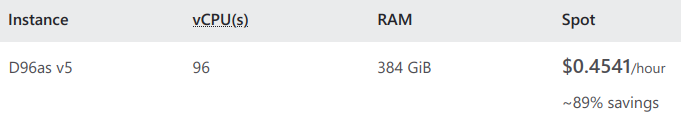</td> </tr> <tr class="fragment"> <td>AWS</td> <td>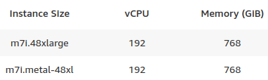</td> <td>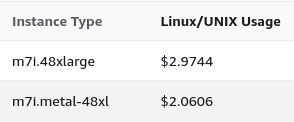</td> </tr> <tr class="fragment"> <td>Google</td> <td>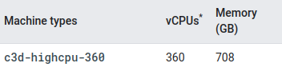</td> <td>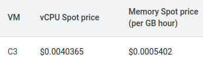<div style="font-size: 0.6em;">(~$1.8356/hour)</div></td> </tr> </table> <div class="fragment"> Spot instances + labtech caching = <span class="highlight">profit!!!</span> </div> <aside class="notes"> * Now to run your hundreds of experiments as fast as possible, you might think you need to pay for a big cluster of machines * However, you can get pretty far with a single big virtual machine in the cloud: * How about enough cores to run 96 tasks at the same time? * How about 192 tasks? * Or even 360 tasks? * All for dollars an hour or less. * Just don't quote me on the prices because they change and there might be other costs * Now we're also looking at spot instances, which means your machine might be shutdown with no notice * ...but that's not a big problem with labtech caching all your intermediate results! * Just restart the machine and let labtech pick up from where it left off * This means labtech is particularly well-suited to being used with cheap spot instances </aside>
## More Conveniences * <!-- .element class="fragment" -->Always <span class="highlight">records task execution time</span> * <!-- .element class="fragment" -->Tasks can <span class="highlight">continue even when one fails</span> * <!-- .element class="fragment" --><span class="highlight">Conserve RAM</span> by sharing data between tasks (Linux-only for now) <aside class="notes"> * I've also packed labtech with a bunch of other conveniences I found myself wanting * It always saves how long a task took to run * It can continue running other tasks even when one fails * (useful if you're going to run it overnight) * And it can conserve RAM on Linux by sharing memory between tasks </aside>
## Designed for Customisation <div class="side-by-side-code"> <div class="fragment"> ```python class CloudStorage(Storage): ... lab = lt.Lab( storage=CloudStorage(...), ) ``` </div> <div class="fragment"> ```python class CsvCache(BaseCache): ... @lt.task(cache=CsvCache()) class TableTask: ... ``` </div> </div> <aside class="notes"> * Finally, labtech is designed for you to customise * You can define a custom storage backend to send cached results wherever you want, like cloud storage * And while it defaults to saving results with Python's built-in object pickling system, * ...you can define a custom cache type to change the format * For example, you might want to save tabular results as CSVs or another tabular file type </aside>
## How does labtech compare to other tools? <aside class="notes"> * Right, now we've seen what labtech can do * ...how does this compare to other tools out there? </aside>
<div class="venn"> <div class="r-stack"> 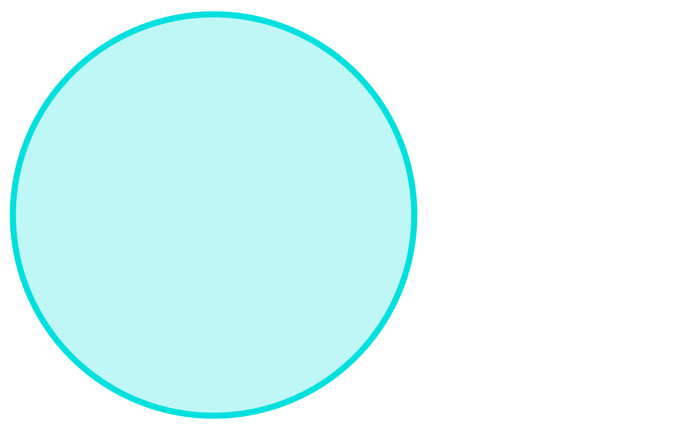 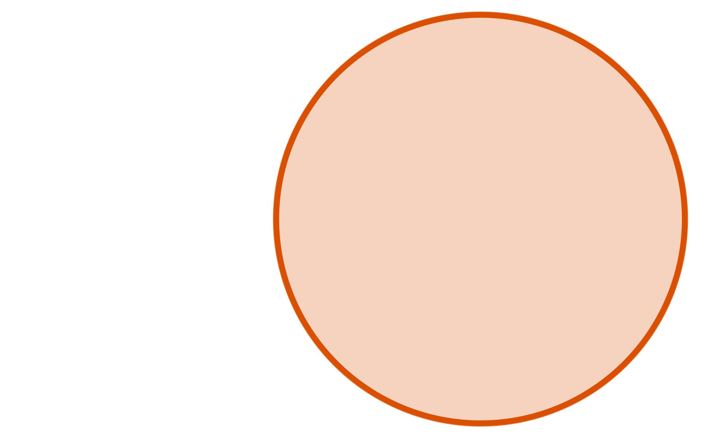 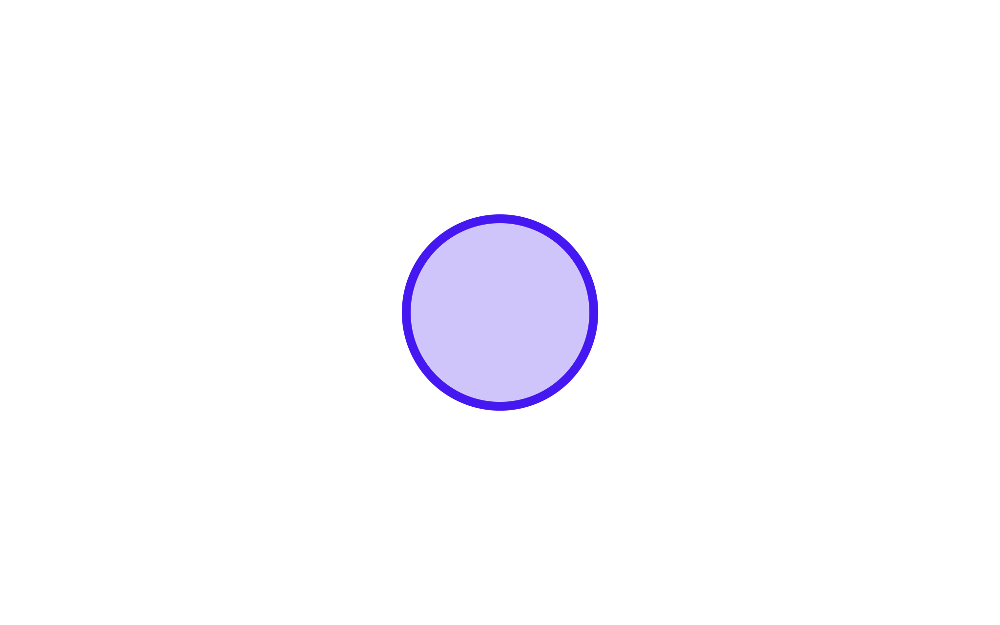 </div> <div class="venn-content" style="left: 105px;"> <div class="venn-content-inner"> <h4>Concurrency</h4> <p class="fragment" data-fragment-index="1"><strong>Local:</strong> <code>multiprocessing</code>, <code>concurrent.futures</code></p> <!-- Also: https://github.com/simoninireland/epyc --> <p class="fragment" data-fragment-index="2"><strong>Distributed:</strong> Ray Core, Dask.distributed</p> <!-- Also: https://ipyparallel.readthedocs.io/en/latest/tutorial/task.html --> <p class="fragment" data-fragment-index="3"><strong>Within-task:</strong> Ray Data, Dask.dataframe, <code>sklearn</code></p> </div> </div> <div class="venn-content" style="right: 100px;"> <div class="venn-content-inner"> <h4>Tracking</h4> <div class="fragment" data-fragment-index="4"> <strong>Saving and visualising: config, results, and outputs</strong> MLflow, ClearML, Aim, Weights & Biases (W&B), etc. Labtech works with these (MLflow out-of-the-box) </div> </div> </div> <div class="venn-content fragment" data-fragment-index="5" style="width: 155px; height: 100px; top: 220px; left: 400px; display: flex; align-items: center;"> <h4 style="font-size: 1.05em;">Experiment Management</h4> </div> </div> <aside class="notes"> * Two kinds of tools that can similarly help run experiments: tools for concurrency and tools for tracking experiments * Python has lots of tools for concurrency: * On your local machine: concurrent futures in the Python standard library makes it easy to run a function many times across multiple processes * Ray and Dask can similarly let you run a function across many machines * And some data processing libraries have built-in support for distributing parts of a task across processes or machines, * ...these in particular actually play quite nicely in conjunction with the tools above or with labtech * There are also many tools for tracking and visualising experiments * These are more focussed on capturing the results than they are about preparing the experiments * Labtech can also play nicely with these specialised tracking tools, and has built-in support for logging experiment parameters and metrics to mlflow * However, none of these provide a complete solution for managing experiments * I'd class labtech as an *Experiment Management* tool that supports both concurrency and experiment tracking </aside>
### Experiment Management <table class="tool-table" style="font-size: 0.5em;"> <thead> <th width="14.5%"></th> <th>Concurrency</th> <th>Dependencies</th> <th>Caching</th> <th class="fragment" data-fragment-index="1">Python Interface</th> <th class="fragment" data-fragment-index="2">Declarative Parameters</th> <th class="fragment" data-fragment-index="3">Dynamic Pipelines</th> </thead> <tbody> <!-- Dagster: Pipelines and caching, but not experiments as it doesn't support permutations --> <!-- <tr> <td>Guild AI</td> <td>✅</td> <td>[✅](https://my.guild.ai/t/pipelines/163)</td> <td>[⚠](https://my.guild.ai/t/can-guild-take-advantage-of-cached-results/682)</td> <td class="neutral fragment" data-fragment-index="1">YAML + CLI</td> </tr> --> <tr> <td>W&B Launch</td> <td><div class="tool-icon">✅</div></td> <td><div class="tool-icon">❌</div></td> <td><div class="tool-icon">❌</div></td> <!-- https://docs.wandb.ai/guides/launch/launch-faqs#when-using-docker-queues-to-run-multiple-jobs-that-download-the-same-artifact-withuse_artifact-do-we-re-download-the-artifact-for-every-single-run-of-the-job-or-is-there-any-caching-going-on-under-the-hood --> <td class="negative fragment" data-fragment-index="1"><div class="tool-icon">❌</div><div class="footnote">CLI + Server</div></td> <td class="neutral fragment" data-fragment-index="2"><div class="tool-icon"></div><div class="footnote">Param Grid</div></td> <!-- https://docs.wandb.ai/guides/launch/sweeps-on-launch --> <td class="negative fragment" data-fragment-index="3">N/A</td> </tr> <!-- <tr> <td>MLflow Pipelines</td> <td>✅</td> <td class="neutral">⚠</td> No DAG: https://www.mlflow.org/docs/1.30.1/pipelines.html <td>❌</td> https://www.mlflow.org/docs/1.30.1/pipelines.html <td class="negative fragment" data-fragment-index="1">YAML + Template</td> </tr> --> <tr> <td>Polyaxon</td> <td><div class="tool-icon">✅</div></td> <td><div class="tool-icon">✅</div></td> <!-- https://polyaxon.com/docs/intro/automation/automation-dag --> <td><div class="tool-icon">✅</div></td> <!-- https://polyaxon.com/docs/core/scheduling-strategies/operations-caching --> <td class="negative fragment" data-fragment-index="1"><div class="tool-icon">❌</div><div class="footnote">YAML + Server</div></td> <td class="fragment" data-fragment-index="2"><div class="tool-icon">✅</div></td> <!-- https://polyaxon.com/docs/automation/optimization-engine/grid-search/ --> <td class="negative fragment" data-fragment-index="3"><div class="tool-icon">❌</div><div class="footnote">Fixed in YAML</div></td> <!-- https://polyaxon.com/docs/core/specification/operation/ --> </tr> <tr> <td>DVC</td> <!-- Does support concurrency with -j: https://dvc.org/doc/command-reference/exp/run --> <td><div class="tool-icon">✅</div></td> <td><div class="tool-icon">✅</div></td> <!-- https://dvc.org/doc/start/data-pipelines/data-pipelines --> <td><div class="tool-icon">✅</div></td> <!-- https://dvc.org/doc/start/data-pipelines/data-pipelines --> <td class="negative fragment" data-fragment-index="1"><div class="tool-icon">❌</div><div class="footnote">YAML + CLI</div></td> <td class="negative fragment" data-fragment-index="2"><div class="tool-icon">❌</div><div class="footnote">Configured via CLI</div></td> <!-- DIY with CLI: https://dvc.ai/blog/hyperparam-tuning --> <td class="negative fragment" data-fragment-index="3"><div class="tool-icon">❌</div><div class="footnote">Fixed in YAML</div></td> <!-- https://github.com/iterative/dvc/issues/10418 --> </tr> <tr> <td>Ploomber</td> <td><div class="tool-icon">✅</div></td> <td><div class="tool-icon">✅</div></td> <!-- https://docs.ploomber.io/en/latest/user-guide/parametrized.html --> <td><div class="tool-icon">✅</div></td> <!-- https://docs.ploomber.io/en/latest/get-started/intro-to-ploomber.html --> <td class="negative fragment" data-fragment-index="1"><div class="tool-icon">❌</div><div class="footnote">YAML + CLI</div></td> <td class="neutral fragment" data-fragment-index="2"><div class="tool-icon"></div><div class="footnote">Param Grid</div></td> <!-- https://docs.ploomber.io/en/latest/cookbook/grid.html --> <td class="negative fragment" data-fragment-index="3"><div class="tool-icon">❌</div><div class="footnote">Fixed in YAML</div></td> </tr> <tr> <td>joblib</td> <td><div class="tool-icon">✅</div></td> <td><div class="tool-icon">❌</div></td> <!-- Parallel, but no DAG: https://joblib.readthedocs.io/en/stable/why.html --> <td><div class="tool-icon">✅</div></td> <!-- https://joblib.readthedocs.io/en/stable/memory.html --> <td class="positive fragment" data-fragment-index="1"><div class="tool-icon">✅</div></td> <td class="negative fragment" data-fragment-index="2"><div class="tool-icon">✅</div></td> <td class="negative fragment" data-fragment-index="3"><div>N/A</div></td> </tr> <tr class="highlight"> <td>labtech</td> <td><div class="tool-icon">✅</div></td> <td><div class="tool-icon">✅</div></td> <td><div class="tool-icon">✅</div></td> <td class="positive fragment" data-fragment-index="1"><div class="tool-icon">✅</div></td> <td class="positive fragment" data-fragment-index="2"><div class="tool-icon">✅</div><div class="footnote">Experiments as objects</div></td> <td class="positive fragment" data-fragment-index="3"><div class="tool-icon">✅</div><div class="footnote">Dependencies in code</div></td> </tr> </tbody> </table> <aside class="notes"> * There are quite a few other experiment management tools out there, ...I've tried to represent all the major ones here * From my review of these tools, most have good support for the three speed-ups we achieved with labtech earlier * However, a lot of these tools require you to define a pipeline of experiment steps in a YAML configuration file * ...and some even require you to set up a server * ...whereas labtech gets you up and running faster with Python code only * Declaring experiment parameters in task objects * ...also makes it easier to control exactly which experiments you want to run * And finally, declaring task dependencies as parameters in code * ...gives you more flexibility to construct dynamic experiments * ...like pipelines with optional steps * I could definitely imagine using a tool like Ploomber or DVC * ...for running a regularly scheduled data pipeline, * ...but I'd prefer labtech for dynamic and interactive experimentation. </aside>
## Labtech Roadmap * <!-- .element class="fragment" --> Improved memory sharing between tasks * <!-- .element class="fragment" --> Concurrency backends: * Distributed concurrency (Ray or Dask) * Multi-interpreter (Python 3.13?) * Custom concurrency backends * <!-- .element class="fragment" --> <span class="highlight">Help users experiment faster</span> <aside class="notes"> * Looking ahead, there's a few things I'd like to add into labtech * Improved memory sharing, especially looking at what's possible beyond Linux * More options for concurrency: * Distributing across many machines, probably leveraging Ray or Dask * Maybe multi-interpreter concurrency when that gets better support in Python * And making it possible to define your own concurrency backends * Overall, the goal is to help users experiment faster, so let me know what would most help you </aside>
## Thanks for Listening! <!-- .element style="margin: 0;" --> 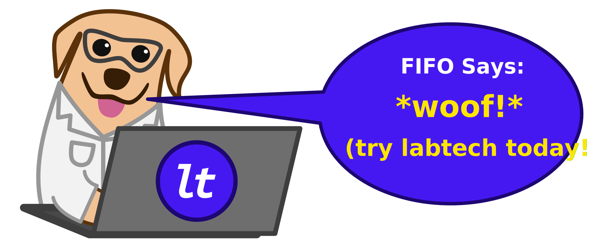 <div style="font-size: 0.85em;"> <div><code>pip install labtech</code></div> <div><a style="color: white;" href="https://pypi.org/project/labtech">pypi.org/project/labtech</a></div> <div style="margin-top: 20px;" class="fragment"> <h3 class="highlight">I'd love to hear your feedback!</h3> <ul> <li>Does labtech fit how you work?</li> <li>What would make it fit?</li> </ul> </div> </div> </div> <aside class="notes"> * So thanks very much for listening * If you've liked what you've seen, go give labtech a go, or give it a star on GitHub * And I'd love to get feedback on how labtech could be better: * If you think labtech might be a good fit for your problem * ...get in touch and I'll help you apply it to your code * So thanks again, and I'd be happy to take any questions </aside>